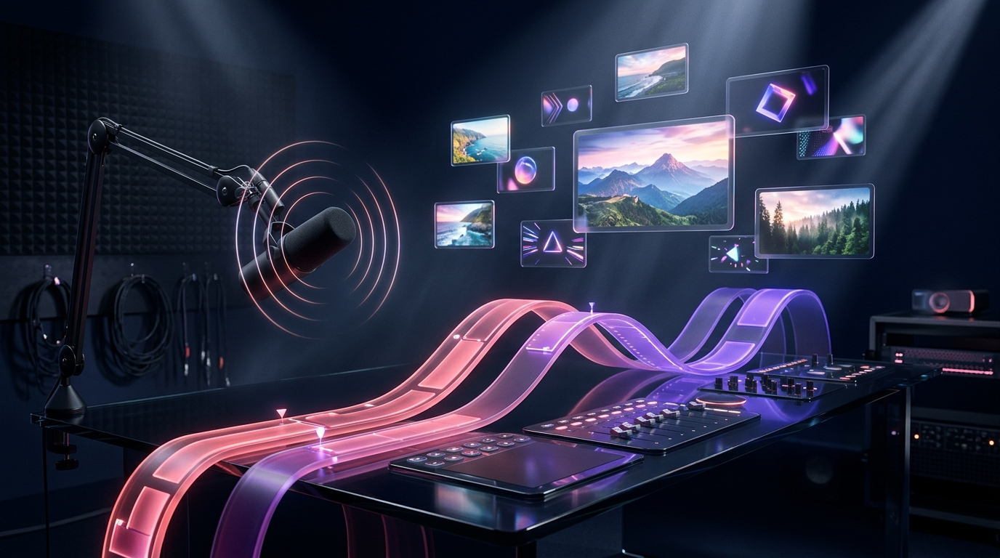
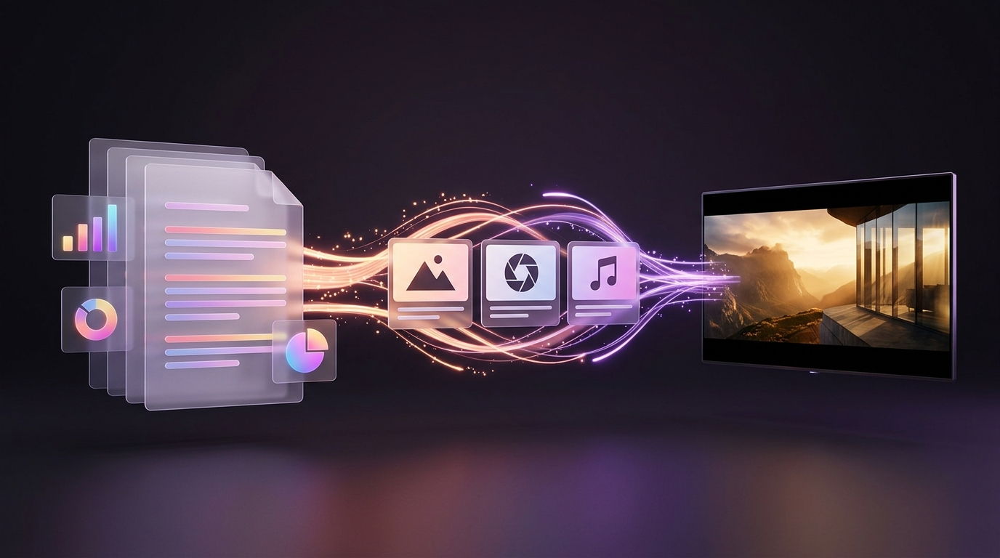
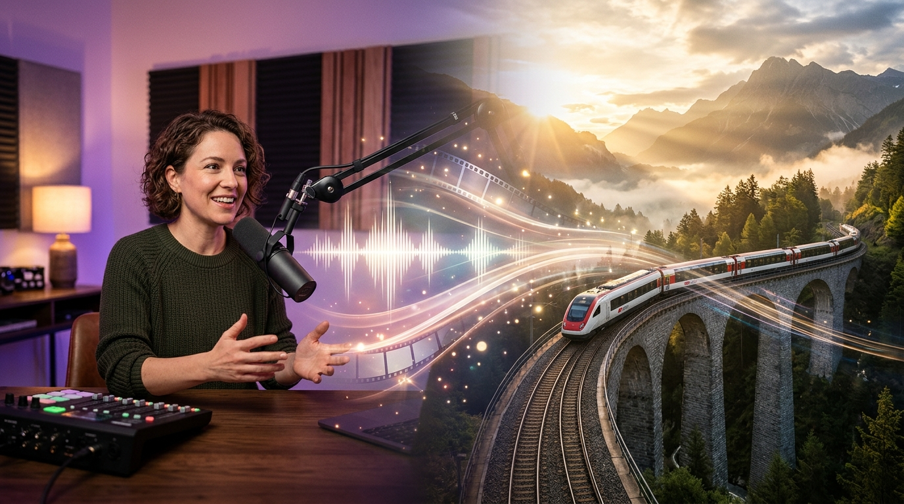

The complete visual handbook to Google's AI-powered video presentation studio—turning Docs & Slides into narrated storyboards with Gemini, AI Voiceovers, Avatars, Teleprompter Studio, and custom Veo B-roll.

Traditional video editors force you onto intimidating multi-track timelines before you even have a story. Google Vids (vids.google.com) sits right alongside Docs, Sheets, and Slides—combining slide-simple scene cards with Gemini scripting, studio recording, and custom Veo generation.
Because Google Vids lives natively inside Google Drive, there is nothing to install, render locally, or back up—every edit saves to the cloud automatically in real time.
Visit vids.google.com (or docs.google.com/videos), type vids.new in your address bar, or click + New → Google Vids inside Google Drive.
Describe your goal and type @ to attach an existing Google Doc, PDF, or brief—Gemini drafts a complete multi-scene storyboard, script, and score.
Click Import Slides to pull selected slides from any presentation, keeping editable text layers, charts, and speaker notes ready for voiceover!
Pick a curated studio template (Product Pitch, Executive Update, Training Tutorial, Event Recap) with pre-coordinated fonts, transitions, and lower thirds.
| Format / Spec | Dimensions | Best Use Cases & Pacing Recommendations |
|---|---|---|
| Widescreen (Default) | 16:9 (1920 × 1080) |
Executive pitches, software screen-share demos, onboarding tutorials, town-hall updates, and YouTube / LMS embeds. |
| Vertical / Social | 9:16 / 1:1 |
Mobile-first product teasers, event countdown reels, internal Slack/Chat announcements, and LinkedIn square explainers. |
| Runtime Ceiling | Up to 10 min (Ideal: 90s–4m) |
Google Vids supports up to 10 minutes per project, but 6–12 scenes (2–3 minutes total) holds viewer retention above 80%. |
If you have ever used Google Slides, you already know 70% of Google Vids. Learn these 7 numbered studio controls to command the remaining 30% like a seasoned video producer.
@ Grounding: Prompt Gemini with @ links to your Google Docs, Slides, or PDFs to draft scenes automatically.@Drive
Staring at a blank timeline is history. Typing @ inside Help me create grounds Gemini directly in your own Google Docs, Slide decks, and PDFs—so facts, metrics, and structure never get hallucinated.

@Spec_Doc or @Deck.Gemini maps Heading 2 sections cleanly into individual video scenes—6 crisp headings yield 6 tightly focused scenes.
Call out key stats (e.g., 42% faster, $0 setup) on bullets so Vids promotes them into large on-screen title cards.
Before accepting the draft, edit scene titles or swap visual style presets in Gemini's preview outline—zero cost to iterate!
Great audio makes even simple visuals feel expensive. Google Vids gives you three mix-and-match narration paths—and automatically syncs scene timing to your spoken words.

Expressive text-to-speech voices (Warm, Confident, Calm, Energetic). Edit two words in the script box and regenerate that scene in 3 seconds!
Camera-free digital presenters (photorealistic or illustrated) supporting up to 24 languages—ideal for global SOPs and instant localization.
Capture Camera, Screen + Camera, or Voice Only with Meet-grade background blur and a built-in read-along Teleprompter.
(...3s)—click Remove and the video cuts seamlessly like editing a Google Doc!
Veo B-Roll, Imagen Visuals & Lyria MusicStock footage gets you a fast first draft, but generic office handshakes rarely match your brand. With Google AI Ultra, you can generate bespoke 8-second Veo 3.1 video clips, custom graphics, and AI music right inside the right-hand rail.
| Sidebar Tool | Powered By | Best Way to Use It Inside Your Presentation |
|---|---|---|
| Generate a Video | Veo 3.1 (8s HD) |
Custom product beauty shots, metaphorical B-roll cutaways over narration, and looping atmospheric background plates. |
| Generate an Image | Imagen / Nano Banana |
Cohesive custom illustrations, isometric diagrams, icons, and stylized chapter title backgrounds tailored to your color palette. |
| Remove Background | Vision Cutout AI | Select any product photo or team headshot on the canvas and click Remove background for instant floating layer cutouts! |
| Custom AI Music | Lyria + Stock Audio |
Prompt mood, tempo, and instrumentation (e.g., "Warm acoustic marimba & lo-fi pulse, no vocals") for bespoke background beds. |
"clean blurred negative space on the left third" (or "subtle dark atmospheric gradient") so white typography pops effortlessly without dark boxes!
What separates an amateur slide export from a broadcast-grade explainer? Three habits: staggered Object Timing, restrained Transitions, and balanced Audio Ducking.
Click any text box or chart → Show timing. Drag its start handle so each bullet pops onto screen the exact second your voice mentions it!
Never let music drown out speech. Turn on Background music ducking (or keep music at 15–20%) so tracks dip smoothly under narration.
Use clean Hard Cuts for 80% of scene changes, saving soft Dissolves or Slide Pushes solely for major chapter shifts.
Each recipe pairs a specific Workspace input with the fastest narration and visual workflow—turning hours of editing or live meetings into reusable 2-minute assets.
| Project Recipe | Best Starting Input | Voice & Visual Setup | High-Impact Studio Tip |
|---|---|---|---|
| 1. Executive Pitch / Async Deck Target: 2m 00s (8 scenes) |
Import Slides from your existing investor or leadership presentation. | Camera Bubble via Teleprompter in bottom-right corner + slide animations. | Record a warm 10s full-screen intro on Scene 1, then shrink your webcam into a corner circle for data slides! |
| 2. Product Launch & Feature Demo Target: 90s (6 scenes) |
@Product_PRD + "Help me create" customer benefit arc. |
Screen Recording for UI walkthrough + Veo 3.1 hero lifestyle B-roll. | Zoom browser UI to 125% before recording your screen so buttons and text stay razor-sharp on mobile. |
| 3. Onboarding / Global SOP Guide Target: 3m 00s (10 scenes) |
@SOP_Checklist_Doc organized with numbered H2 steps. |
Gemini AI Voiceover or 24-Language AI Avatar presenter. | Use AI Voiceover instead of live mic—when software changes next quarter, update 1 scene's text in 15 seconds! |
| 4. Client Quarterly Recap Reel Target: 75s (5 scenes) |
@Q3_Results_Doc + exported chart PNGs from Google Sheets. |
Confident studio voiceover + staggered Object Timing KPI callouts. | Drop a subtle sound effect (soft whoosh / chime) on the timeline right as your #1 ROI metric appears. |
| 5. Event or Course Promo Trailer Target: 45s (5 fast scenes) |
Template: Event Promo in 16:9 (or 9:16 for social reels). |
3 custom Veo atmospheric clips + upbeat Lyria AI music track. | Keep scenes snappy (6–8s each) with bold 4-word kinetic titles and a QR code / short URL on the final frame. |
No more emailing 800 MB Final_v7_REAL.mp4 attachments back and forth. Reviewers comment directly on scenes in their browser just like a Google Doc—and you only export MP4 when ready to publish externally.
Click Comment on any scene or canvas object and @mention a teammate (e.g., "@Maya verify legal disclaimer on Scene 5") to assign action items.
Open File → Version history to name milestones ("Pre-Exec Cut") and restore any earlier storyboard state in two clicks without duplicating files.
Over 60% of workplace videos start muted. Generate Closed Captions from your transcript and fix brand acronyms in seconds for 100% silent-play clarity.
| Delivery Method | How to Trigger It | When to Choose This Option |
|---|---|---|
| Share Live in Drive (Viewer Link) |
Click Share → set org or client emails to Viewer (hides timeline & script; opens sleek Drive video player). | Internal company updates, async team standups, and living SOPs—fix a typo tomorrow and the same link plays the updated cut! |
| Commenter Review Link | Click Share → set stakeholders to Commenter before locking final picture. | Client sign-off, product marketing review, and legal/compliance approval cycles. |
| Download MP4 ( 1080p HD) |
Click File → Download as MP4 (or Export to Google Drive as MP4). | Uploading to YouTube, LinkedIn, LMS portals, customer help centers, keynote stages, or archiving frozen deliverables. |
Whisk + Flow + VidsTogether with our Google Whisk and Google Flow guides, Google Vids completes your three-part Google AI Ultra studio—taking any idea from wild visual concept to polished, multi-minute narrated presentation.
Bookmark this final page for instant fixes to the seven most common Google Vids hiccups—plus a 6-point pre-flight checklist before sharing with leadership or clients.
| Symptom / Problem | Root Cause & Instant Fix |
|---|---|
@File doesn't show up in "Help me create" |
File isn't accessible to your signed-in account or is an unsupported raw archive. Open the Doc/Slide/PDF once in Drive so it surfaces at the top of recent @ suggestions. |
| AI Voiceover cuts off or rushes the end of a scene | Scene duration was manually shortened shorter than the audio clip. Drag the right edge of the scene bar outward by 1–2 seconds on the timeline for breathing room. |
| Background music overpowers spoken narration | Music volume left at 100% without ducking. Select the music track, enable Auto-Ducking, or lower track volume to 15%–20%. |
| Screen recording text looks blurry or tiny | Recorded an ultra-wide 4K monitor at 100% scale. Resize your target window to 16:9 and zoom browser UI to 125%–150% before clicking Record. |
| Slide text disappears halfway through a scene | Accidental Object Timing trim. Select the text box, click Show timing, and snap its right handle all the way to the end of the scene. |
| Camera or microphone blocked in Recording Studio | Browser site permission muted. Click the tune/lock icon left of vids.google.com in Chrome's address bar and set Camera & Microphone to Allow. |
| Teammate opens my link and sees the raw editor | Shared with Editor role instead of Viewer. Change general access to Viewer so recipients launch directly into the clean streaming player. |
@Drive First (H2 headings = clean scenes).Viewer (or export 1080p MP4 for external).https://vids.google.com, click Help me create, type @ to attach your latest Google Doc or Slide deck, swap two stock clips for custom Veo B-roll, and publish your first studio explainer in under 15 minutes!